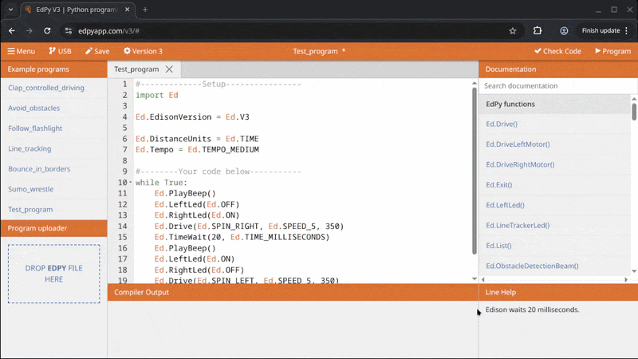

1. Introduction to Python and Edison Robot V3
Over the next ten weeks we will be learning the basics of programming.
The environments that we'll be utilising will be the Python programming language and the Edison V3 robot. We'll also make use of a microcontroller environment called Wokwi towards the end.
1.1 Why Python?
Python is a great language to start learning programming because it is simple, readable, and widely used. Its clear, English-like syntax makes it easier for beginners to understand programming concepts without getting overwhelmed by complex rules. Python also has a huge community and countless free resources, meaning learners can quickly find tutorials, examples, and help when stuck. At the same time, it is powerful enough to be used in real-world applications such as web development, data science, artificial intelligence, and automation. This combination of simplicity and versatility makes Python both beginner-friendly and highly practical for future projects.
1.2 Why Edison?
The Edison V3 robot is a great way to start learning programming because it combines simplicity with powerful, hands-on learning. Learners can write code that directly controls its sensors, motors, and outputs, making abstract concepts easy to understand through real-world results. It is affordable, durable, and easy to set up with USB charging and a built-in rechargeable battery, so the focus stays on coding rather than technical setup. With free resources, browser-based programming tools, and strong community support, Edison V3 provides an engaging and practical entry point into programming.
Most importantly, hopefully it's going to be fun!
1.3 What do we need?
We'll provide you with an Edison robot during class time. To interface with the robot you'll need to go to: https://www.edpyapp.com/v3/ It's recommended that you use the Chrome browser to open the above coding environment.
There are also video tutorials and a workbook that the Edison team have made available for you to use. Feel free to use these but be aware that they are not an official part of the course.
All classwork and assignments will be available via MSTeams.
1.4 Getting to know the Edison

1.5 Downloading a simple program to the Edison
The Edison is programmed via an editor which is found at https://www.edpyapp.com/v3/ (use Chrome to open).
1.5.1 Connect Edison to the computer using the USB cable
Connect Edison to the computer using the USB cable attached underneath the Edison robot:

1.5.2 Upload the Python code to the Edison
Press the ‘Program’ button in the upper right corner of the EdPy app, In the pop-up window select ‘Edison V3 – Paired’ and click ‘Connect’:

1.6 Structure of an EdPy program
Programming the Edison consists of two main parts. The Setup part and the Instructional code.
1.6.1 Setup (Lines 1-7)
All Edison programs must contain the setup code. The Setup section tells the Edison how it should set itself up. This means what version it is and what units it should use. For example, should it measure distance in cm or seconds.
1.6.2 Instructional (Lines 8-19)
The instructional code is telling the Edison to do something – giving the Edison instructions to perform. Can you make a guess at what the Edison will do from reading the code?
Important
Click on each (1) in the code below to expand information about each line.
- I contain additional information for you to learn.
1 2 3 4 5 6 7 8 9 10 11 12 13 14 15 16 17 18 19 | |
-
This code starts with a ‘#’ (hash) character. When a line starts with this character, it is called a ‘comment line.’ Any characters that come after the ‘#’ are ignored by the compiler.
The text following after the # is used to document code so that other people can understand the program. Comments are used to communicate with other programmers, not the computer.
-
This tells Python to
importanother library of pre-written Python code. In this instance we are importing all the built-in Edison Python commands, in other words, all the EdPy commands.The import allows the compiler/computer to understand how to interface with the Edison robot.
-
This line defines the built-in Edison variable that relates to the version of Edison you are using.
-
This line defines the built-in Edison variable that relates to the distance units used by the robot:
inches,cmortime(in seconds).If you want to use
inches, you should change this line to:Ed.DistanceUnits = Ed.INCHIf you are using an Edison V1, then you must select
Ed.TIMEfor the distance units:Ed.DistanceUnits = Ed.TIME. -
This line defines the built-in Edison variable which relates to how fast or slow Edison plays a musical tune. Check EdPy documentation for the different speeds that can be set.
Python Constants
Look at the character sets in the sample code that are written in all capitals, such as V1, V2, CM and INCH. In Python, the convention is that any variable name written in all caps is a constant.
Constants are variables that maintain the same value everywhere in your program and are used as a reference point throughout the program. EdPy has a range of helpful built-in constants. These are similar to pre-defined settings that our program will use with the Edison.